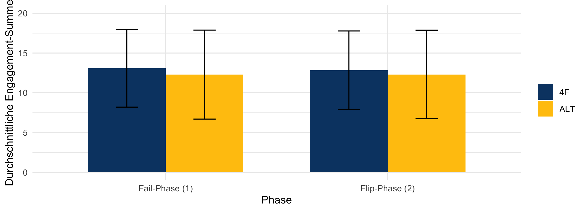
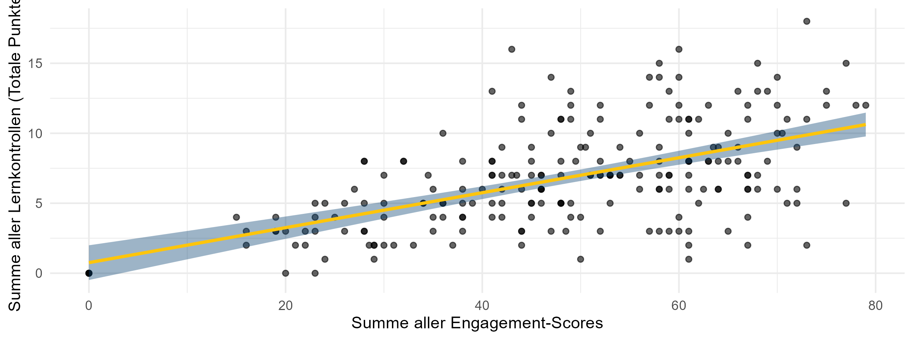
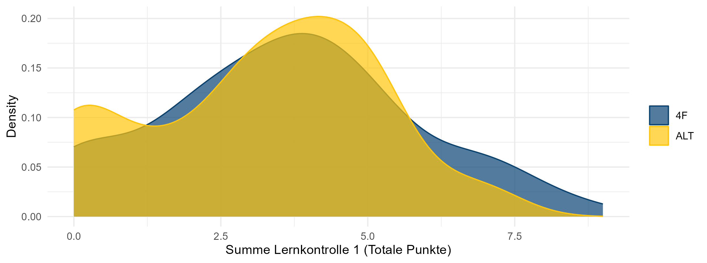
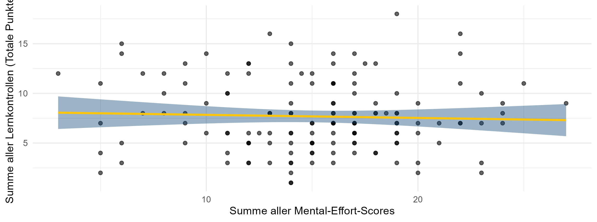

How to flip the right way:
Fail, flip, fix and feed in practice
12. GEBF-Tagung
![]()
28.01.2025
Exploration und Instruktion

OpenAI (2024) “generiere mir ein Bild im Schulkontext welche Exploration und Instruktion kontrastiert”
Ausgangslage
Inhalt
Ausgangslage
4F-Modell und Theorien
Forschungsfrage & -design
Resultate & Diskussion
Bildungskontext
Schweiz, geprägt vom Kantönligeist und von …
Phasenmodellen: PADUA, AVIVA, KAFKA und SAMBA, …
PADUA: (Aebli, 1983), AVIVA: (Städeli & Maurer, 2020), KAFKA und SAMBA: (Reusser 1999 nach Leuchter, 2009)
Berner (Mathematik-) Didaktik, geprägt von Heuristiken:
- SOL - Selbstorganisiertes Lernen
- Reichhaltige Aufgaben
- …
SOL: (Ammann-Tinguely & Sahli Lozano, 2020; Hilbe & Herzog, 2016); reichhaltige Aufgaben: (Eckhart, 2020; Nydegger, 2019)
4F-Modell und Theorien
Inhalt
Ausgangslage
4F-Modell und Theorien
Forschungsfrage & -design
Resultate & Diskussion
Flipped Classroom Method
set of pedagogical approaches that: […] (2) use class time for learning activities that are active and social […]
Design in 2 Phasen:
- Phase 1: learn basic content online and prior to class
- Phase 2: in-class time to clarify students’ understandings […] enable students to engage deeply […]
Empirische Forschung
Metastudie
| g | SE | |
|---|---|---|
| Overall effect | 0.37 | 0.025 |
| School-age children | 0.68 | 0.025 |
| Math | 0.26 | 0.067 |
n=173
4F Modell
- Fail
- Flip
- Fix
- Feed
Productive Failure (PF)
Productive Failure is an instructional approach in which students engage in problemsolving attempts prior to instruction.
Design in 2 Phasen:
- Phase 1: generation and exploration phase
- Phase 2: consolidation phase
Metastudie PF
| Moderating variables | n | g | SE |
|---|---|---|---|
| Education | |||
| Junior high | 11 | 0.65 | 0.16 |
| High school | 9 | 0.38 | 0.17 |
| College | 3 | 0.06 | 0.40 |
| Domain | |||
| Science/math | 20 | 0.50 | 0.13 |
| Other | 3 | 0.06 | 0.40 |
| Duration | |||
| ≤ 1 week | 16 | 0.43 | 0.16 |
| > 1 week | 7 | 0.45 | 0.13 |
Forschungsfrage & -design
Inhalt
Ausgangslage
4F-Modell und Theorien
Forschungsfrage & -design
Resultate & Diskussion
Forschungsfragen
- Welche Phasen im 4F Modell sollen besser in class, welche out of class durchgeführt werden?
- Welche Rollen spielen engagement, collaboration und mental load in dem Zusammenhang?
Untersuchungsdesign
- Mathematikunterricht in der Sekundarstufe 1
- Thema: Mittlere absolute Abweichung
- Experimentelles Forschungsdesign (randomisiert innerhalb der Klassen)
- 220 Lernende aus 12 Klassen
| 4F | ALT | |
|---|---|---|
| Fail | in class | out of class |
| Flip | out of class | in class |
| Fix | in class | in class |
| Feed | in class | in class |

In class Out of class
Hypothesen
- Engagement is highest during in-class activities, irrespective of variant.
- Engagement predicts performance.
- The 4F model does not outperform the ALT model.
- Mental load does not predict performance.
Resultate & Diskussion
Inhalt
Ausgangslage
4F-Modell und Theorien
Forschungsfrage & -design
Resultate & Diskussion
1. Engagement is highest during in-class activities, irrespective of variant.

| Wilcoxon | p |
|---|---|
| eng_1 | 0.405 |
| eng_2 | 0.691 |
| 4F | 0.605 |
| Alt | 0.812 |
## 3. Deskriptive Vergleiche 4F und ALT
mean(calcdata$engagement_1[calcdata$FF_Alt=="4F"],na.rm=TRUE)
sd(calcdata$engagement_1[calcdata$FF_Alt=="4F"],na.rm=TRUE)
mean(calcdata$engagement_1[calcdata$FF_Alt=="ALT"],na.rm=TRUE)
sd(calcdata$engagement_1[calcdata$FF_Alt=="ALT"],na.rm=TRUE)
## 4. Auf Normalverteilung prüfen (mit Shapiro-Wilk Test)
shapiro.test(calcdata$engagement_1)
shapiro.test(calcdata$engagement_2)
## 4. Hypothesentest
## a) Gruppenunterschiede zwischen 4F und Alt zum gleichen Zeitpunkt
wilcox.test(calcdata$engagement_1 ~ calcdata$FF_Alt)
wilcox.test(calcdata$engagement_2 ~ calcdata$FF_Alt)
## b) Gruppenunterschiede innerhalb der 4F resp. ALT Gruppe zu t1 vs. t2 (fail vs. flip)
#Untergruppen der Daten erstellen
calcdata_4f <- subset(calcdata, FF_Alt == "4F")
calcdata_alt <- subset(calcdata,FF_Alt == "ALT")
wilcox.test(calcdata_4f$engagement_1,calcdata_4f$engagement_2,paired=TRUE)
wilcox.test(calcdata_alt$engagement_1,calcdata_alt$engagement_2,paired=TRUE)> mean(calcdata$engagement_1[calcdata$FF_Alt=="ALT"],na.rm=TRUE)
[1] 16.67391
> sd(calcdata$engagement_1[calcdata$FF_Alt=="ALT"],na.rm=TRUE)
[1] 6.988413
> shapiro.test(calcdata$engagement_1)
Shapiro-Wilk normality test
data: calcdata$engagement_1
W = 0.8085, p-value = 9.904e-16
> shapiro.test(calcdata$engagement_2)
Shapiro-Wilk normality test
data: calcdata$engagement_2
W = 0.82215, p-value = 3.876e-15
> wilcox.test(calcdata$engagement_1 ~ calcdata$FF_Alt)
Wilcoxon rank sum test with continuity correction
data: calcdata$engagement_1 by calcdata$FF_Alt
W = 6369, p-value = 0.4051
alternative hypothesis: true location shift is not equal to 0
> wilcox.test(calcdata$engagement_2 ~ calcdata$FF_Alt)
Wilcoxon rank sum test with continuity correction
data: calcdata$engagement_2 by calcdata$FF_Alt
W = 6166, p-value = 0.6911
alternative hypothesis: true location shift is not equal to 0
> wilcox.test(calcdata_4f$engagement_1,calcdata_4f$engagement_2,paired=TRUE)
Wilcoxon signed rank test with continuity correction
data: calcdata_4f$engagement_1 and calcdata_4f$engagement_2
V = 1563, p-value = 0.605
alternative hypothesis: true location shift is not equal to 0
> wilcox.test(calcdata_alt$engagement_1,calcdata_alt$engagement_2,paired=TRUE)
Wilcoxon signed rank test with continuity correction
data: calcdata_alt$engagement_1 and calcdata_alt$engagement_2
V = 1773, p-value = 0.8123
alternative hypothesis: true location shift is not equal to 05 Fragen mit einer 5-Punkte Likert Skala. Übernommen aus Kapur (2014), \(\alpha = 0.79\).
- Diese Lektion hat mich dazu gebracht, dass ich mich aktiv beteiligen möchte.
- Ich war während der Lektion fokussiert.
- Ich war aufmerksam während der Lektion.
- Ich habe an den Aktivitäten der Lektion teilgenommen.
- Ich habe mich während der Lektion konzentriert.
2. Engagement predicts performance.

Lineare Regression: \(\quad R^2=0.297 \quad p=2.2\cdot 10^{-16}\)
# Engagement als Prädiktor an Tag 1
lm_engagement_day1 <- lm(Lernkontrolle1_tot ~ engagement_tag1, data = calcdata)
summary(lm_engagement_day1)
# Engagement als Prädiktor an Tag 2
lm_engagement_day2 <- lm(Lernkontrolle2_tot ~ engagement_tag2, data = calcdata)
summary(lm_engagement_day2)
# Engagement als Prädiktor an Tag 2 (inklusive Engagement am 1. TAg)
lm_engagement_day2_2 <- lm(Lernkontrolle2_tot ~ engagement_tag1 + engagement_tag2, data = calcdata)
summary(lm_engagement_day2_2) #nur das direkt preceding engagement relevant
# Total engagement mit total Lernkontrolle
# totale Lernzunahme berechnen
calcdata$Lernkontrolle_tot <- calcdata$Lernkontrolle1_tot + calcdata$Lernkontrolle2_tot
# lineare regression:
lm_engagement_tot <- lm(Lernkontrolle_tot ~ engagement_tot, data = calcdata)
summary(lm_engagement_tot)> # Engagement als Prädiktor an Tag 1
> lm_engagement_day1 <- lm(Lernkontrolle1_tot ~ engagement_tag1, data = calcdata)
> summary(lm_engagement_day1)
Call:
lm(formula = Lernkontrolle1_tot ~ engagement_tag1, data = calcdata)
Residuals:
Min 1Q Median 3Q Max
-4.9723 -0.8754 -0.0512 1.0909 4.7330
Coefficients:
Estimate Std. Error t value Pr(>|t|)
(Intercept) 0.53850 0.31880 1.689 0.0926 .
engagement_tag1 0.11369 0.01176 9.671 <2e-16 ***
---
Signif. codes: 0 ‘***’ 0.001 ‘**’ 0.01 ‘*’ 0.05 ‘.’ 0.1 ‘ ’ 1
Residual standard error: 1.725 on 218 degrees of freedom
Multiple R-squared: 0.3002, Adjusted R-squared: 0.297
F-statistic: 93.53 on 1 and 218 DF, p-value: < 2.2e-16
> # Engagement als Prädiktor an Tag 2
> lm_engagement_day2 <- lm(Lernkontrolle2_tot ~ engagement_tag2, data = calcdata)
> summary(lm_engagement_day2)
Call:
lm(formula = Lernkontrolle2_tot ~ engagement_tag2, data = calcdata)
Residuals:
Min 1Q Median 3Q Max
-4.3717 -1.3722 -0.4974 1.1274 5.2502
Coefficients:
Estimate Std. Error t value Pr(>|t|)
(Intercept) 0.50400 0.32823 1.536 0.126
engagement_tag2 0.12476 0.01301 9.591 <2e-16 ***
---
Signif. codes: 0 ‘***’ 0.001 ‘**’ 0.01 ‘*’ 0.05 ‘.’ 0.1 ‘ ’ 1
Residual standard error: 2.004 on 218 degrees of freedom
Multiple R-squared: 0.2967, Adjusted R-squared: 0.2935
F-statistic: 91.98 on 1 and 218 DF, p-value: < 2.2e-16
> # Engagement als Prädiktor an Tag 2 (inklusive Engagement am 1. TAg)
> lm_engagement_day2_2 <- lm(Lernkontrolle2_tot ~ engagement_tag1 + engagement_tag2, data = calcdata)
> summary(lm_engagement_day2_2) #nur das direkt preceding engagement relevant
Call:
lm(formula = Lernkontrolle2_tot ~ engagement_tag1 + engagement_tag2,
data = calcdata)
Residuals:
Min 1Q Median 3Q Max
-4.333 -1.336 -0.229 1.149 5.204
Coefficients:
Estimate Std. Error t value Pr(>|t|)
(Intercept) 0.19928 0.41221 0.483 0.629
engagement_tag1 0.01798 0.01474 1.220 0.224
engagement_tag2 0.11827 0.01404 8.422 5.08e-15 ***
---
Signif. codes: 0 ‘***’ 0.001 ‘**’ 0.01 ‘*’ 0.05 ‘.’ 0.1 ‘ ’ 1
Residual standard error: 2.002 on 217 degrees of freedom
Multiple R-squared: 0.3015, Adjusted R-squared: 0.2951
F-statistic: 46.84 on 2 and 217 DF, p-value: < 2.2e-16
> # Total engagement mit total Lernkontrolle
> # totale Lernzunahme berechnen
> calcdata$Lernkontrolle_tot <- calcdata$Lernkontrolle1_tot + calcdata$Lernkontrolle2_tot
> # lineare regression:
> lm_engagement_tot <- lm(Lernkontrolle_tot ~ engagement_tot, data = calcdata)
> summary(lm_engagement_tot)
Call:
lm(formula = Lernkontrolle_tot ~ engagement_tot, data = calcdata)
Residuals:
Min 1Q Median 3Q Max
-7.8733 -2.0002 -0.3149 1.8721 9.8729
Coefficients:
Estimate Std. Error t value Pr(>|t|)
(Intercept) 0.7576 0.6287 1.205 0.229
engagement_tot 0.1249 0.0123 10.150 <2e-16 ***
---
Signif. codes: 0 ‘***’ 0.001 ‘**’ 0.01 ‘*’ 0.05 ‘.’ 0.1 ‘ ’ 1
Residual standard error: 3.074 on 218 degrees of freedom
Multiple R-squared: 0.3209, Adjusted R-squared: 0.3178
F-statistic: 103 on 1 and 218 DF, p-value: < 2.2e-16Aufgaben von Kapur (2014), gleichmässig aufgeteilt nach procedural knowledge, conceptual knowledge und transfert knowledge.
Aufgabe 1
Berechne die mittlere absolute Abweichung der folgenden Noten in einer Statistikprüfung:
- 30, 60, 50, 40, 70
- 10, 12, 20, 22
Ein anderer Schüler, Schüler A, verwendet die folgende Methode, um Teilaufgabe a. dieser Frage zu beantworten:
\(|30 - 70| + |60 - 70| + |50 - 70| + |40 - 70| + |70 - 70| = 100\)
\(100 \div 5 = 20\) Die Lösung ist 20.
Wie unterscheidet sich die Methode von Schüler A von der Berechnung der mittleren absoluten Abweichung? Welche Methode ist besser? Begründe deine Antwort.
Aufgabe 2
Beachte die folgenden sechs Datensätze (ein Datensatz pro Zeile):
- A: 1, 5, 6, 10
- B: 4, 4, 4, 4
- C: 101, 102, 103, 104
- D: 7, 8, 9, 10
- E: 1, 2, 9, 10
- F: 1, 2, 3, 4
Welcher der Datensätze hat die kleinste mittlere absolute Abweichung?
Welcher der Datensätze hat die grösste mittlere absolute Abweichung?
Aufgabe 3
Ein aus fünf Zahlen bestehender Datensatz hat den Mittelwert ( M = 7 ) und die mittlere absolute Abweichung = 4.
Verwende diese Informationen, um die Fragen a. und b. zu beantworten.
- Wie verändern sich Mittelwert und mittlere absolute Abweichung, wenn die Zahlen 1 und 13 zu dem Datensatz hinzugefügt werden, sodass ein Datensatz mit sieben Zahlen entsteht?
- Mittelwert (kreuze eine Antwort an):
- Mittlere absolute Abweichung (kreuze eine Antwort an):
- Wie verändern sich Mittelwert und mittlere absolute Abweichung, wenn die Zahlen 3 und 13 zu dem Datensatz hinzugefügt werden, sodass ein Datensatz mit sieben Zahlen entsteht?
- Mittelwert (kreuze eine Antwort an):
- Mittlere absolute Abweichung (kreuze eine Antwort an):
Aufgabe 4
Eine gleiche Anzahl von Schülern nahm am Finale eines Sportwettbewerbs über 100 m Sprint und 100 m Schwimmen teil. Die Zeiten (in Sekunden) der Sieger des 100m Sprints und des 100m Schwimmens sind unten aufgeführt, ebenso wie die Durchschnittszeiten und die Standardabweichung der Finalisten der beiden Wettbewerbe.
| 100m Sprint | 100m Schwimmen | |
|---|---|---|
| Gewinner | 11s | 40s |
| Mittelwert der Finalisten, ( M ) | 12s | 45s |
| Mittlere absolute Abweichung der Finalisten | 1s | 10s |
Unter der Annahme, dass alles andere gleich ist, wer von den beiden Gewinnern ist der bessere Sportler?
Aufgabe 1
Bei der Berechnung der mittleren absoluten Abweichung, erkläre, warum es wichtig ist, den Absolutbetrag der Differenzen zum Mittelwert zu rechnen.
Bei der Berechnung der mittleren absoluten Abweichung, erkläre, warum es wichtig ist, die Summe durch die Anzahl der Werte zu teilen.
Aufgabe 2
Die Eigentümer von zwei Kinos, A und B, argumentieren, dass ihr jeweiliges Kino eine gleichmäßigere Besucherzahl aufweist. Sie erfassten die täglichen Besucherzahlen ihrer Kinos an 11 zufälligen Tagen. Die Ergebnisse ihrer Datenerhebung sind im Folgenden dargestellt:
| Kino A | Kino B |
|---|---|
| Mittelwert, M | 72 |
| Mittlere absolute Abweichung | 10 |
Welches Kino hat Ihrer Meinung nach eine gleichmäßigere Anwesenheit?
- Kino A
- Kino B
- Beide hatten eine ähnlich gleichmäßige Besucheranzahl
- Keine der oben genannten Lösungen
Aufgabe 3
Beachte die folgenden sechs Datensätze (ein Datensatz pro Zeile):
| A | 1 | 5 | 6 | 10 |
|---|---|---|---|---|
| B | 4 | 4 | 4 | 4 |
| C | 101 | 102 | 103 | 104 |
| D | 7 | 8 | 9 | 10 |
| E | 1 | 2 | 9 | 10 |
| F | 1 | 2 | 3 | 4 |
Welche Datensätze haben die gleiche mittlere absolute Abweichung? (1 Antwort)
- Datensätze A, E, F
- Datensätze C, D, F
- Datensätze A, B
- Datensätze C, F
- Datensätze B, D, F
- Datensätze B, E, F
Aufgabe 4
Ein aus fünf Zahlen bestehender Datensatz hat den Mittelwert M = 7 und die mittlere absolute Abweichung = 4. Verwende diese Informationen, um die Fragen a. bis c. zu beantworten.
Wenn jede der fünf Zahlen um 2 erhöht wird, wie lauten der neue Mittelwert M und die neue mittlere absolute Abweichung?
- M = 7, Mittlere absolute Abweichung = 4
- M = 9, Mittlere absolute Abweichung = 4
- M = 7, Mittlere absolute Abweichung = 6
- M = 9, Mittlere absolute Abweichung = 6
Wenn jede der fünf Zahlen mit 5 multipliziert wird, wie lauten der neue Mittelwert und die neue mittlere absolute Abweichung?
- M = 7, Mittlere absolute Abweichung = 4
- M = 35, Mittlere absolute Abweichung = 4
- M = 7, Mittlere absolute Abweichung = 20
- M = 35, Mittlere absolute Abweichung = 20
Wie verändern sich Mittelwert und mittlere absolute Abweichung, wenn die Zahlen 5 und 9 zu dem Datensatz hinzugefügt werden, sodass ein Datensatz mit sieben Zahlen entsteht?
Mittelwert (kreuze eine Antwort an):
- unverändert
- nimmt zu
- nimmt ab
Mittlere absolute Abweichung (kreuze eine Antwort an):
- unverändert
- nimmt zu
- nimmt ab
Aufgabe 5
Davids Ergebnisse für Mathematik, Physik und Chemie in den Abschlussprüfungen sind unten aufgeführt. Die Leistungen seiner Klasse in diesen drei Fächern sind ebenfalls unten aufgeführt:
| Fach | Mathematik | Physik | Chemie |
|---|---|---|---|
| Davids Punkte | 95 | 90 | 85 |
| Klassenmittelwert | 80 | 80 | 80 |
| Mittlere absolute Abweichung der Klasse | 15 | 5 | 4 |
In welchem Fach hat David im Vergleich zu seiner Klasse am besten abgeschnitten?
- Mathematik
- Physik
- Chemie
In welchem Fach hat David im Vergleich zu seiner Klasse am schlechtesten abgeschnitten?
- Mathematik
- Physik
- Chemie
3. The 4F model does not outperform the ALT model.

Wilcoxon: \(\quad p=0.804\)
## 2. TOST rechnen: Two-Sided Significance Testing
tost_result <- TOSTtwo(
m1 = mean(FF$Lernkontrolle1_tot, na.rm = TRUE),
m2 = mean(ALT$Lernkontrolle1_tot, na.rm = TRUE),
sd1 = sd(FF$Lernkontrolle1_tot, na.rm = TRUE),
sd2 = sd(ALT$Lernkontrolle1_tot, na.rm = TRUE),
n1 = length(FF),
n2 = length(ALT),
low_eqbound_d = -0.5, # maximal 0.5 Punkte unter
high_eqbound_d = +0.5, # maximal 0.5 Punkte über
alpha = 0.05 # Konfidenz: 95%
)> ## 2. TOST rechnen: Two-Sided Significance Testing
> tost_result <- TOSTtwo(
+ m1 = mean(FF$Lernkontrolle1_tot, na.rm = TRUE),
+ m2 = mean(ALT$Lernkontrolle1_tot, na.rm = TRUE),
+ sd1 = sd(FF$Lernkontrolle1_tot, na.rm = TRUE),
+ sd2 = sd(ALT$Lernkontrolle1_tot, na.rm = TRUE),
+ n1 = length(FF),
+ n2 = length(ALT),
+ low_eqbound_d = -0.5, # maximal 0.5 Punkte unter
+ high_eqbound_d = +0.5, # maximal 0.5 Punkte über
+ alpha = 0.05 # Konfidenz: 95%
+ )
TOST results:
t-value lower bound: 4.44 p-value lower bound: 0.000009
t-value upper bound: -1.77 p-value upper bound: 0.040
degrees of freedom : 150.83
Equivalence bounds (Cohen's d):
low eqbound: -0.5
high eqbound: 0.5
Equivalence bounds (raw scores):
low eqbound: -1.0284
high eqbound: 1.0284
TOST confidence interval:
lower bound 90% CI: -0.105
upper bound 90% CI: 0.992
NHST confidence interval:
lower bound 95% CI: -0.212
upper bound 95% CI: 1.098
Equivalence Test Result:
The equivalence test was significant, t(150.83) = -1.765, p = 0.0398, given equivalence bounds of -1.028 and 1.028 (on a raw scale) and an alpha of 0.05.
Null Hypothesis Test Result:
The null hypothesis test was non-significant, t(150.83) = 1.337, p = 0.183, given an alpha of 0.05.
NHST: don't reject null significance hypothesis that the effect is equal to 0
TOST: reject null equivalence hypothesisTOST-Äquivalenztest (vgl. Walker & Nowacki, 2010) - Statistically equivalent and not different.
4. Mental load does not predict performance.

ANOVA: \(\quad p=0.626\)
TOST-Äquivalenztest (vgl. Walker & Nowacki, 2010) - Statistically not equivalent and not different.
## 5. Testen, ob das Modell mit oder ohne Mental Effort den Leistungszuwachs besser vorhersagt
# nur Daten behalten, die nirgendwo NA haben (weil sonst ANOVA nicht gerechnet werden kann)
calcdata_me <- calcdata[complete.cases(calcdata[,c("mental_effort_tag1","mental_effort_tag2","Lernkontrolle1_tot","Lernkontrolle2_tot")]),]
# Tag 1
model1_day1 <- lm(Lernkontrolle1_tot ~ mental_effort_tag1, data = calcdata_me)
summary(model1_day1)
model2_day1 <- lm(Lernkontrolle1_tot ~ 1, data = calcdata_me)
summary(model2_day1)
anova(model1_day1,model2_day1)
AIC(model1_day1)
AIC(model2_day1)
# Tag 2
model1_day2 <- lm(Lernkontrolle2_tot ~ mental_effort_tag2, data = calcdata_me)
summary(model1_day2)
model2_day2 <- lm(Lernkontrolle2_tot ~ 1, data = calcdata_me)
summary(model2_day2)
anova(model1_day2,model2_day2)
AIC(model1_day2)
AIC(model2_day2)
# Insgesamt
calcdata_me$mental_effort_tot <- calcdata_me$mental_effort_tag1 + calcdata_me$mental_effort_tag2
model1_tot <- lm(Lernkontrolle_tot ~ mental_effort_tot, data = calcdata_me)
model2_tot <- lm(Lernkontrolle_tot ~ 1, data = calcdata_me)
anova(model1_tot,model2_tot)
AIC(model1_tot)
AIC(model2_tot)> ## 5. Testen, ob das Modell mit oder ohne Mental Effort den Leistungszuwachs besser vorhersagt
> # nur Daten behalten, die nirgendwo NA haben (weil sonst ANOVA nicht gerechnet werden kann)
> calcdata_me <- calcdata[complete.cases(calcdata[,c("mental_effort_tag1","mental_effort_tag2","Lernkontrolle1_tot","Lernkontrolle2_tot")]),]
>
> # Tag 1
> model1_day1 <- lm(Lernkontrolle1_tot ~ mental_effort_tag1, data = calcdata_me)
> summary(model1_day1)
Call:
lm(formula = Lernkontrolle1_tot ~ mental_effort_tag1, data = calcdata_me)
Residuals:
Min 1Q Median 3Q Max
-3.8770 -0.8787 0.1247 1.1247 5.1213
Coefficients:
Estimate Std. Error t value Pr(>|t|)
(Intercept) 3.861468 0.508998 7.586 3.95e-12 ***
mental_effort_tag1 0.001727 0.061862 0.028 0.978
---
Signif. codes: 0 ‘***’ 0.001 ‘**’ 0.01 ‘*’ 0.05 ‘.’ 0.1 ‘ ’ 1
Residual standard error: 1.861 on 142 degrees of freedom
Multiple R-squared: 5.486e-06, Adjusted R-squared: -0.007037
F-statistic: 0.0007791 on 1 and 142 DF, p-value: 0.9778
> model2_day1 <- lm(Lernkontrolle1_tot ~ 1, data = calcdata_me)
> summary(model2_day1)
Call:
lm(formula = Lernkontrolle1_tot ~ 1, data = calcdata_me)
Residuals:
Min 1Q Median 3Q Max
-3.875 -0.875 0.125 1.125 5.125
Coefficients:
Estimate Std. Error t value Pr(>|t|)
(Intercept) 3.8750 0.1545 25.07 <2e-16 ***
---
Signif. codes: 0 ‘***’ 0.001 ‘**’ 0.01 ‘*’ 0.05 ‘.’ 0.1 ‘ ’ 1
Residual standard error: 1.854 on 143 degrees of freedom
>
> anova(model1_day1,model2_day1)
Analysis of Variance Table
Model 1: Lernkontrolle1_tot ~ mental_effort_tag1
Model 2: Lernkontrolle1_tot ~ 1
Res.Df RSS Df Sum of Sq F Pr(>F)
1 142 491.75
2 143 491.75 -1 -0.0026979 8e-04 0.9778
> AIC(model1_day1)
[1] 591.5081
> AIC(model2_day1)
[1] 589.5089
>
> # Tag 2
> model1_day2 <- lm(Lernkontrolle2_tot ~ mental_effort_tag2, data = calcdata_me)
> summary(model1_day2)
Call:
lm(formula = Lernkontrolle2_tot ~ mental_effort_tag2, data = calcdata_me)
Residuals:
Min 1Q Median 3Q Max
-4.1609 -1.7240 -0.1694 1.4534 5.6036
Coefficients:
Estimate Std. Error t value Pr(>|t|)
(Intercept) 4.59772 0.53518 8.591 1.4e-14 ***
mental_effort_tag2 -0.10921 0.06905 -1.582 0.116
---
Signif. codes: 0 ‘***’ 0.001 ‘**’ 0.01 ‘*’ 0.05 ‘.’ 0.1 ‘ ’ 1
Residual standard error: 2.264 on 142 degrees of freedom
Multiple R-squared: 0.01731, Adjusted R-squared: 0.01039
F-statistic: 2.502 on 1 and 142 DF, p-value: 0.1159
> model2_day2 <- lm(Lernkontrolle2_tot ~ 1, data = calcdata_me)
> summary(model2_day2)
Call:
lm(formula = Lernkontrolle2_tot ~ 1, data = calcdata_me)
Residuals:
Min 1Q Median 3Q Max
-3.8056 -1.8056 -0.3056 1.1944 5.1944
Coefficients:
Estimate Std. Error t value Pr(>|t|)
(Intercept) 3.8056 0.1896 20.07 <2e-16 ***
---
Signif. codes: 0 ‘***’ 0.001 ‘**’ 0.01 ‘*’ 0.05 ‘.’ 0.1 ‘ ’ 1
Residual standard error: 2.276 on 143 degrees of freedom
>
> anova(model1_day2,model2_day2)
Analysis of Variance Table
Model 1: Lernkontrolle2_tot ~ mental_effort_tag2
Model 2: Lernkontrolle2_tot ~ 1
Res.Df RSS Df Sum of Sq F Pr(>F)
1 142 727.73
2 143 740.56 -1 -12.822 2.5019 0.1159
> AIC(model1_day2)
[1] 647.9519
> AIC(model2_day2)
[1] 648.4669
>
> # Insgesamt
> calcdata_me$mental_effort_tot <- calcdata_me$mental_effort_tag1 + calcdata_me$mental_effort_tag2
>
> model1_tot <- lm(Lernkontrolle_tot ~ mental_effort_tot, data = calcdata_me)
> model2_tot <- lm(Lernkontrolle_tot ~ 1, data = calcdata_me)
>
> anova(model1_tot,model2_tot)
Analysis of Variance Table
Model 1: Lernkontrolle_tot ~ mental_effort_tot
Model 2: Lernkontrolle_tot ~ 1
Res.Df RSS Df Sum of Sq F Pr(>F)
1 142 1826.2
2 143 1829.3 -1 -3.0746 0.2391 0.6256
> AIC(model1_tot)
[1] 780.4426
> AIC(model2_tot)
[1] 778.6848
TOST results:
t-value lower bound: -0.79 p-value lower bound: 0.785
t-value upper bound: -12.79 p-value upper bound: 0.00000000000000000000000009
degrees of freedom : 143
Equivalence bounds (Cohen's d):
low eqbound: -0.5
high eqbound: 0.5
Equivalence bounds (raw scores):
low eqbound: -0.0335
high eqbound: 0.0335
TOST confidence interval:
lower bound 90% CI: -0.047
upper bound 90% CI: -0.029
NHST confidence interval:
lower bound 95% CI: -0.049
upper bound 95% CI: -0.027
Equivalence Test Result:
The equivalence test was non-significant, t(143) = -0.790, p = 0.785, given equivalence bounds of -0.0335 and 0.0335 (on a raw scale) and an alpha of 0.05.
Null Hypothesis Test Result:
The null hypothesis test was significant, t(143) = -6.790, p = 0.000000000278, given an alpha of 0.05.Zentrale Erkenntnisse
- Beide Modelle funktionieren gemäss PF Mechanismen.
- Beide Modelle funktionieren gleich gut.
- Die Rolle des Engagements ist noch unklar.
Limitationen
- out-of-class im Schulgebäude
- “fremde” Lehrperson
- Erhebungsinstrumente
Bibliographie
Danke für Ihre Aufmerksamkeit
In class Out of class
Slides
PH Heidelberg, Richard Conrardy